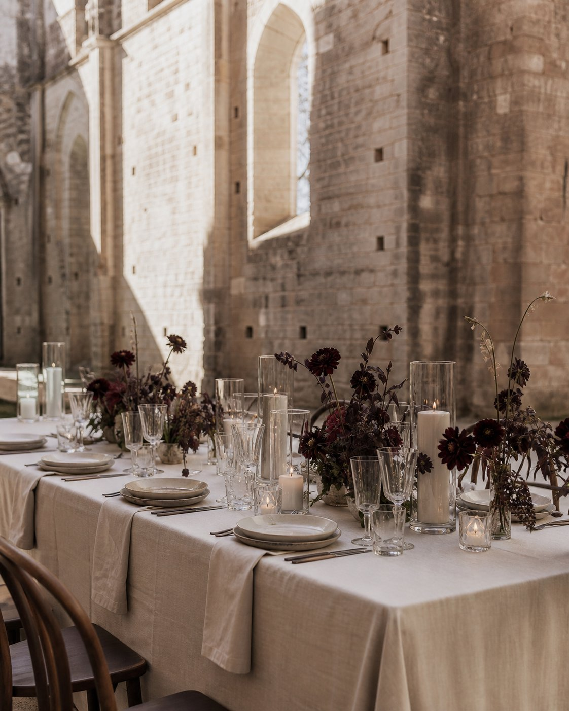
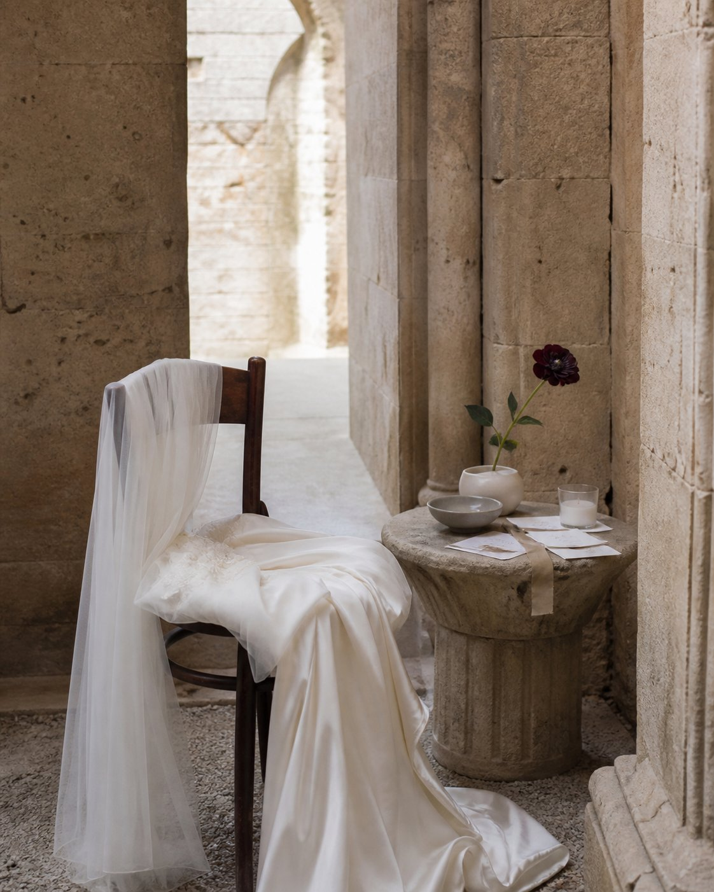
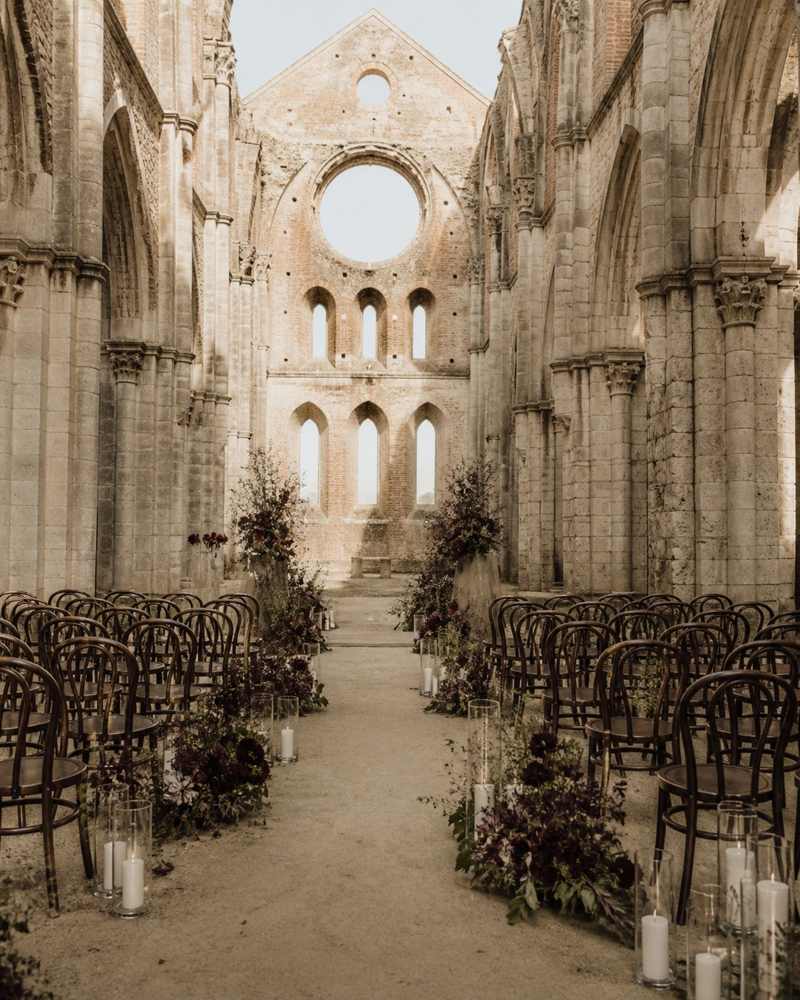

Concept film excerpt


San Galgano - Bridal
A private bridal world for the hours before everything becomes public. Silk, quiet light and old stone shaped into a morning that feels intimate, editorial and entirely held.
Inquire - atelier@liaarmonia.com
Concept film excerpt

